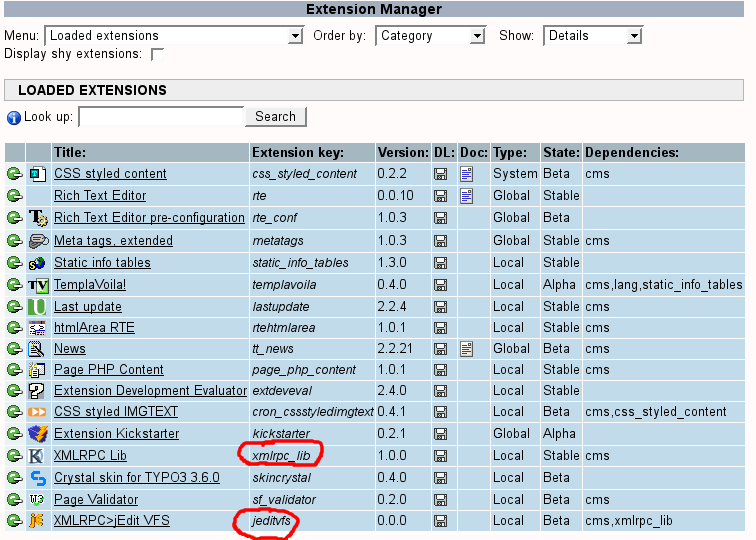
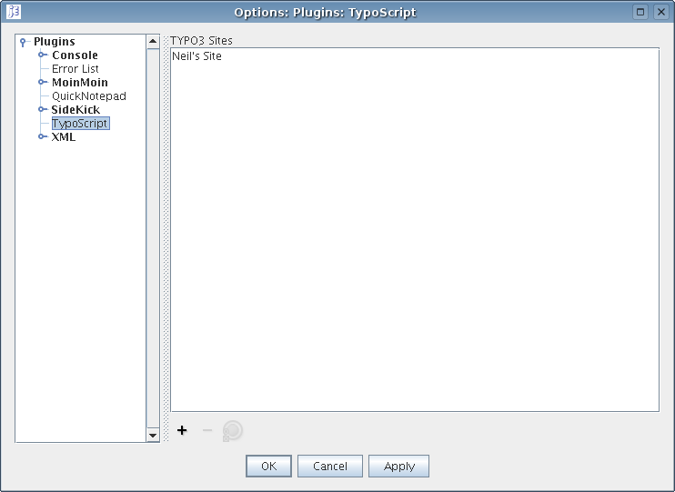
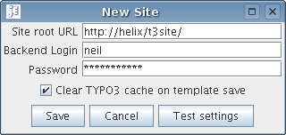
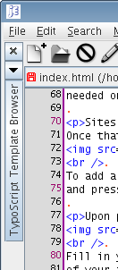
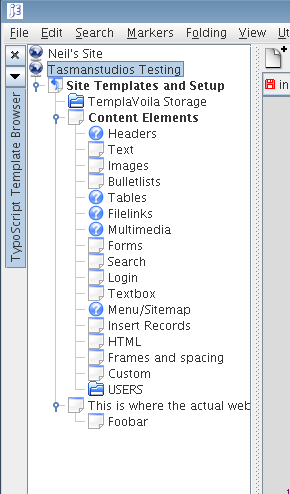

Although TYPO3 is very flexible when it comes to the frontend, the developer experience could use some work. This plugin aims to make development of TypoScript templates a bit easier, providing a site browser and script editor with syntax highlighting.
It is hoped this is an improvement on the cramped editor in the TYPO3 backend while developing or maintaining templates.
If you're reading this, you've already completed the first
stage, the installation of the jEdit plugin! Next you need to
install a simple extension on each of the TYPO3 installations
that you wish to administer using this plugin. The extension
is available from the TYPO3 Extension Repository, with the
key jeditvfs. To install it, you'll also need to
install xmlrpc_lib if you don't have it. No
configuration of the extension is required whatsoever, it
does all the work for you. Just ensure you allow TYPO3 to
clear the cache when it prompts you.
Check the "Loaded Extensions" section of the TYPO3 Extension
Manager and ensure that jeditvfs and xmlrpc_lib are
showing:

Once you have jeditvfs installed and working, you need to configure this plugin. See the Configuring Sites section for the details.
Usage is supposed to be as easy as possible. All you need to do is display the template browser panel if it's not already visible, and configure some sites in the jEdit plugin options. After a site has been added, it immediately appears in the site tree ready to go!
WARNING: There are some network security issues with using this system on insecure networks. Your backend password is sent in the clear over HTTP, rather than hashed as it is during a normal backend login. I recommend you use this solution only across trusted LANs or through an appropriate VPN or SSH tunnel.
You'll need a valid administrator backend login to any sites you want to configure for use. If you installed the backend extension, you have the proper authorisation level on your account to use it here.
Go to the Plugins menu and select Plugin Options, then navigate to the TypoScript tab:

To add a new site, click the + icon. If you want to remove a site later, select it from the list and push -. You can also edit sites by pressing the properties button (the icon of a radio button). Hint: If you change the title of your site and would like jEdit to update it, simply edit the site then save it again, jEdit will then pick up the new name automatically.
Upon pressing + the following dialog will appear:

Fill in your site URL, backend username and password as I
have. You may find the URL a little tricky, what it actually
wants is the path to the root of your frontend, not
your backend. It must also end with a '/' as well. Here's
some examples:
Hopefully that's clear. At any rate it won't let you get it wrong, so guess and check may be the way to go if you're confused still.
You also have the option to clear the page cache in TYPO3 each time you save a template. You generally want to leave this on so that the effects of your changes happen immediately, but on a larger site you may want to be more careful about throwing out your entire cache for a small change. You can clear the cache from the TYPO3 backend any time you like just as you normally would.
If you'd like to check the settings you've provided, press the "Test settings" button. This will also be done automatically when you press "Save". It will check:
It will try to report helpful errors if something doesn't check out. Note that the testing process may take some time.
Once your settings seem to work, save them. The title of your site (as specified in localconf.php) will be fetched and used as the name for this site. If you would find it useful to be able to change this name, send me an email (contact details at the end of this documentation) and I might include that in a future release. When you close the options dialog, any site browsers you may have open will update to reflect the new sites. The list will be saved to your jEdit settings directory, so you only have to add sites once.
Once you have sites installed, you'll want to get started editing templates! Because of the structure of a TYPO3 page tree, you can't open templates from jEdit's normal open dialog, instead there's a special panel for the purpose. By the way, you can only edit templates, you can't create them. Create them using the TYPO3 backend as usual, then they will appear in the site browser when you next open the site tree.
You will need to display the site browser before you can open
templates. It may have opened by itself when you installed
the plugin, or you may need to open it manually. You can
choose to have it as a floating window, or dock it to any
side of the screen (I wouldn't suggest the top or bottom, it
looks terrible). To display it, go to the Plugins
menu, select TypoScript for TYPO3, then Template
browser. It may automatically dock itself to your window
minimised, which will look like this:

In which case you can open it simply by clicking on it. See
the jEdit manual, under Using jEdit->jEdit
Basics->Window Docking for more information on
manipulating dockable panels like the site browser.
Once open, the site browser will present you with a list of
configured sites (with the globe icon next to them), double
click them to open or collapse them. Hint: To reload
the page tree for a site, simply collapse it then open it
again.
Once open, the browser will look like this:

You can open and close branches either by double-clicking or
using the handles to the left of the icons. Pages hosting
templates will show in bold. To edit a template, you have two
options:
You can open as many templates as you like, and they will appear in jEdit's buffer list. You may like to get familiar with using the jEdit editor if you aren't already, it has very good documentation to get you started.
As of version 0.1.1 (server version 1.0.1) you can edit multiple templates from the same page. Extension templates will appear inside the page at the top of the list (before any subpages)
Saving a template back to TYPO3 is as easy as pressing save, just as if it were a normal file. You can also use other jEdit functionality like the Reload option in the File menu to refresh the template if you've edited it in the backend in the meantime.
For those that are curious how this plugin works, I guess the source code is the ultimate documentation. You can browse the jEdit CVS repository from jEdit's sourceforge site, and you'll find the source for this plugin in the plugins module. The TYPO3 extension source is of course available wherever you installed the extension.
Briefly, this system works by TYPO3 exposing an XML-RPC interface to TYPO3 backend authentication and template load/save facility through a frontend plugin with custom renderer set to respond on a special page typenum, 761. It uses raw SQL to read and write templates from the sys_template table, and clears the cache manually (if requested) since the backend API for doing so doesn't work properly from a frontend plugin. The jeditvfs extension could technically be used by another editor looking to provide the functionality I've implemented for jEdit. If you're a developer interested in working with the system, feel free to get in touch for some guidance.
Thanks to Arryn Pidwell (my boss) for the idea to create this, and Slava Pestov for writing jEdit in the first place!
I welcome comments, suggestions and bug reports for this plugin. Please contact me on neil@tasmanstudios.co.nz with any feedback.
If you would like to contribute to this plugin, please email me. I will do my best to maintain this plugin and jeditvfs to ensure they keep working against new TYPO3 and jEdit releases.
This plugin is part of the Typo3 project. The Typo3 project is free software; you can redistribute it and/or modify it under the terms of the GNU General Public License as published by the Free Software Foundation; either version 2 of the License, or (at your option) any later version. The GNU General Public License can be found at http://www.gnu.org/copyleft/gpl.html. A copy is found in the textfile GPL.txt This plugin is distributed in the hope that it will be useful, but WITHOUT ANY WARRANTY; without even the implied warranty of MERCHANTABILITY or FITNESS FOR A PARTICULAR PURPOSE. See the GNU General Public License for more details.
This plugin uses software developed by the Apache Software Foundation (http://www.apache.org). For further information about the licensing of software under the Apache Software License, see the Apache License in the jEdit online help, or visit www.apache.org.